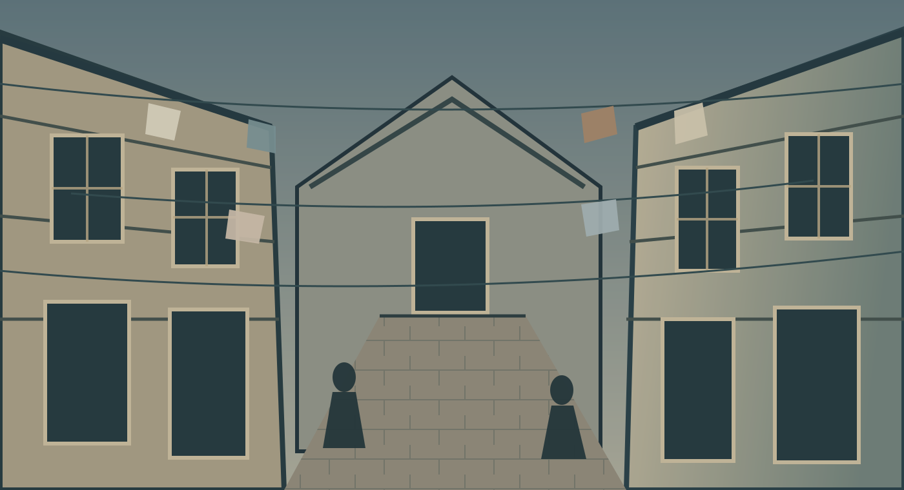

Ambição
A busca de João Romão por fortuna e reconhecimento tem consequências para quem o cerca.
TERCEIRÃO 26 • EXPERIÊNCIA LITERÁRIA
Entre no universo de Aluísio Azevedo. Descubra como os espaços, as relações e as ambições dos moradores revelam os conflitos do Brasil do século XIX.
Começar a exploração ↓Selecione um dos pontos luminosos no cenário. No celular, você também pode usar os botões abaixo da imagem.

Para observar:
Clique em um nome para descobrir sua trajetória e o que ela revela sobre a sociedade retratada no romance.
A busca de João Romão por fortuna e reconhecimento tem consequências para quem o cerca.
O contraste entre o cortiço e o sobrado torna visíveis as diferenças de classe e de prestígio.
O ambiente, as condições materiais e os impulsos humanos são centrais na forma como a história é narrada.
Quer ir além da visita? Leia O Cortiço, publicado em 1890, e aprofunde-se na narrativa de Aluísio Azevedo.
Abrir o livro em PDF ↗Agora que conhece os lugares, as personagens e os temas da obra, teste seus conhecimentos em dez perguntas.
Iniciar QUIZ →